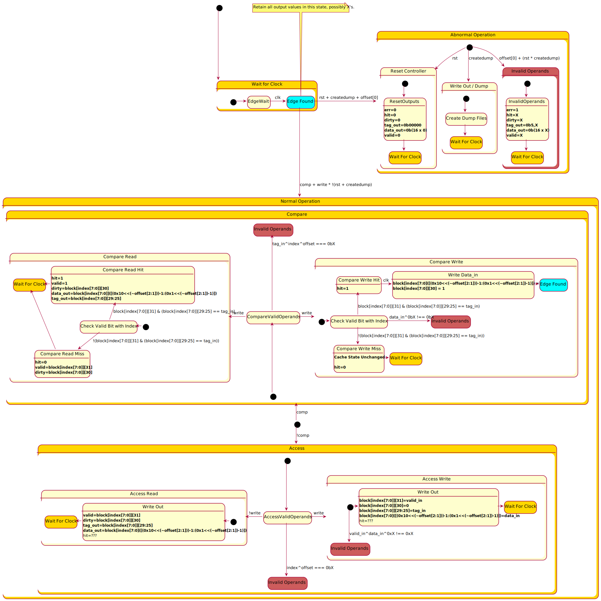
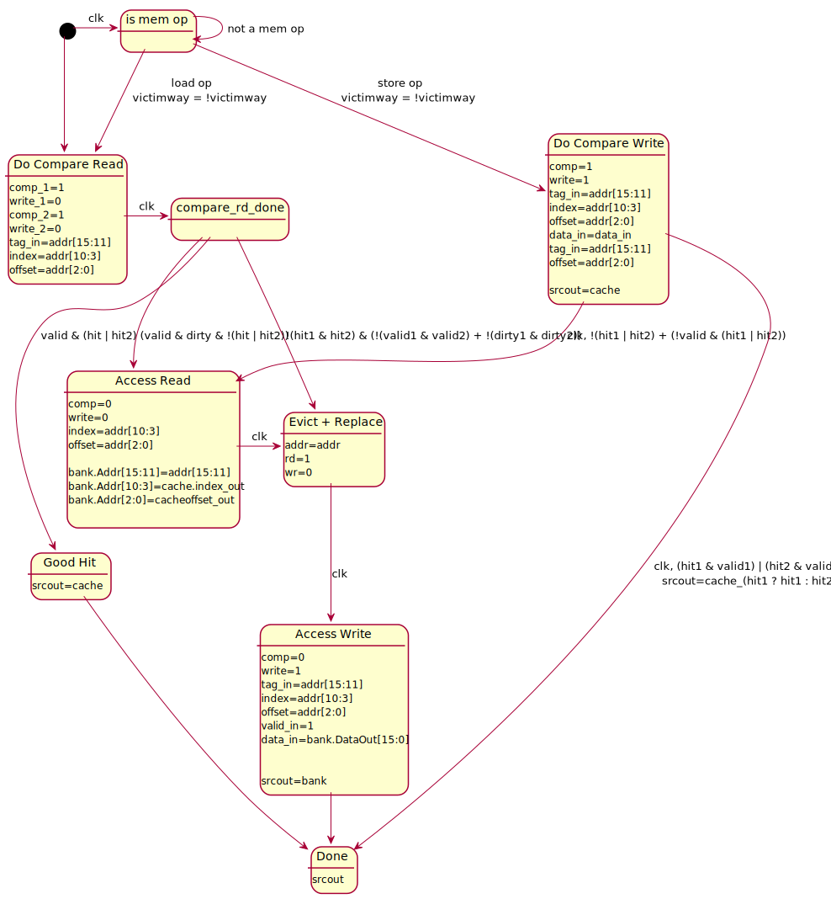

Two Way Set Assoc. Cache Controller State Diagram
1 Pin Descriptions
| Signal | In/Out | Width | Description |
|---|---|---|---|
| enable | In | 1 | Enable cache. Active high. If low, "write" and "comp" have no effect, and all outputs are zero. |
| index | In | 8 | The address bits used to index into the cache memory. |
| offset | In | 3 | offset[2:1] selects which word to access in the cache line. The least significant bit should be 0 for word alignment. If the least significant bit is 1, it is an error condition. |
| comp | In | 1 | Compare. When "comp"=1, the cache will compare tagin to the tag of the selected line and indicate if a hit has occurred; the data portion of the cache is read or written but writes are suppressed if there is a miss. When "comp"=0, no compare is done and the Tag and Data portions of the cache will both be read or written. |
| write | In | 1 | Write signal. If high at the rising edge of the clock, a write is performed to the data selected by "index" and "offset", and (if "comp"=0) to the tag selected by "index". |
| tagin | In | 5 | When "comp"=1, this field is compared against stored tags to see if a hit occurred; when "comp"=0 and "write"=1 this field is written into the tag portion of the array. |
| datain | In | 16 | On a write, the data that is to be written to the location specified by the "index" and "offset" inputs. |
| validin | In | 1 | On a write when "comp"=0, the data that is to be written to valid bit at the location specified by the "index" input. |
| clk | In | 1 | Clock signal; rising edge active. |
| rst | In | 1 | Reset signal. When "rst"=1 on the rising edge of the clock, all lines are marked invalid. (The rest of the cache state is not initialized and may contain X's.) |
| createdump | In | 1 | Write contents of entire cache to memory file. Active on rising edge. |
| hit | Out | 1 | Goes high during a compare if the tag at the location specified by the "index" lines matches the "tagin" lines. |
| dirty | Out | 1 | When this bit is read, it indicates whether this cache line has been written to. It is valid on a read cycle, and also on a compare-write cycle when hit is false. On a write with "comp"=1, the cache sets the dirty bit to 1. On a write with "comp"=0, the dirty bit is reset to 0. |
| tagout | Out | 5 | When "write"=0, the tag selected by "index" appears on this output. (This value is needed during a writeback.) |
| dataout | Out | 16 | When "write"=0, the data selected by "index" and "offset" appears on this output. |
| valid | Out | 1 | During a read, this output indicates the state of the valid bit in the selected cache line. |
2 Cache Diagram

3 Controller
